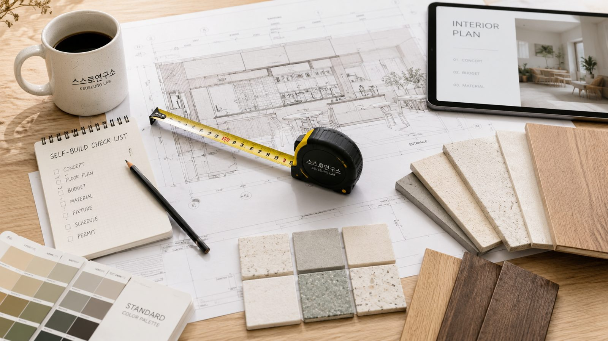

고객이 묻는 다섯 가지, 시공소가 답하는 방식
| 표면 질문 | 실제 문제 | 시공소의 답 |
|---|---|---|
| "뭐까지 직접 할 수 있나요?" | 업체에 다 맡기기엔 비싸고, 직접 하자니 위험하다 | 직접 / 부분발주 / 전문시공을 공정별로 나눠 드립니다 |
| "견적이 적정한가요?" | 비교 기준이 없어 비싼지 모른다 | 공정별 수량·단가 범위·누락 항목을 보여 드립니다 |
| "어떤 순서로 해야 하죠?" | 공정 간 충돌과 재시공이 두렵다 | 선후관계와 체크포인트가 있는 공정표를 드립니다 |
| "누구를 불러야 하죠?" | 기술자 신뢰와 가격 검증이 어렵다 | 면허·보험·이력을 확인한 기술자를 필요한 공정에만 연결합니다 |
| "지원금이나 허가는요?" | 공사보다 행정이 더 복잡하다 | 업종·지역·건물 조건별 체크리스트를 만들어 드립니다 |
여섯 가지 기능
무료 진단부터 현장 검수까지, 필요한 단계만 씁니다.
7분 공사비 절감 진단
업종·면적·상태·예산·건물 조건을 넣으면 공정을 나누고 판정합니다. 무료이며 회원가입이 없습니다.
실행 리포트
공정 지도, 의사결정 판정, 구매 목록(BOM), 공구 목록, 비용 3안, 일정 3안, 행정 체크, 위험·검수점. 여덟 가지를 사람이 검토해 드립니다.
견적서 검증
받아 둔 견적서의 공정명을 표준화하고 중복·수량 이상·누락(철거·폐기·보양·운반·전기 증설)을 짚습니다. 셀프 계획이 없어도 쓸 수 있습니다.
구매 목록과 자재 연결
"도장 30평"이 아니라 페인트·프라이머·퍼티·보양·롤러·로스율·폐기까지 묶어서 목록을 만듭니다. 누락이 곧 추가 비용이기 때문입니다.
기술자 매칭
판정에서 전문 공정으로 분류된 항목만 연결합니다. 별점이 아니라 면허·보험·추가금률·사진 제출률로 관리합니다.
Hold Point 검수
공사 전, 철거 후, 은폐 전, 마감 전, 완료. 다섯 시점에 사진으로 확인합니다. 상주하지 않아도 품질 기록이 남습니다.
진단부터 완료까지 일곱 단계
어느 단계에서 멈춰도 됩니다. 무료 진단만 쓰고 직접 진행하셔도 좋습니다.
| 단계 | 고객이 하는 일 | 시공소가 주는 것 | 비용 |
|---|---|---|---|
| 1 | 주소·업종·면적·예산·입점일 입력 | 규제·공정 예상 세트 | 무료 |
| 2 | 현장 사진·도면·임대차 주요 조항 업로드 | 현장 상태 분류, 추가 질문 | 무료 |
| 3 | 7분 진단 완료 | 직접/부분발주/전문시공 비중, 절감 잠재력 | 무료 |
| 4 | 리포트 선택 | 공정표·구매 목록·비용 3안·행정 체크 | Lite / Pro |
| 5 | 실행 방식 선택 | 자재 구매 연결, 기술자 매칭, 현장 진단 | Site / Match |
| 6 | 공사 중 체크포인트 사진 확인 | 숨은 공정 기록, 변경 비용 확정 | PM Lite |
| 7 | 완료 | 완료 사진·실제 비용·하자 기록 → 점포 이력으로 저장 | — |

시공소가 하지 않는 것
- 시공을 직접 수주하지 않습니다. 관리 범위를 계약서로 정한 공정관리(PM Lite)까지만 합니다.
- 전기·소방·가스·구조 공정을 셀프로 안내하지 않습니다. 왜 직접 하면 안 되는지만 설명합니다.
- 절감액을 단정하지 않습니다. 금액은 범위와 기준일로 드립니다.
- 업체를 골라 주는 서비스가 아닙니다. 공정을 나눠 주는 서비스입니다. 업체 연결은 전문 공정에만 붙습니다.
지금 가장 많이 추천되는 셀프 항목
후기 우수(★)와 가성비 최적(◆)이 동시에 붙은 항목들입니다. 판매처 별점·리뷰 수와 커뮤니티 반복 추천을 기준으로 골랐고, 가격은 2026년 9월 조사 시점 참고값입니다.
자주 묻는 질문
진단 결과는 얼마나 정확한가요?
무료 진단은 업종·상태·경험을 반영한 규칙 기반 초안입니다. 현장 사진과 도면 없이 낸 결과이므로, 유료 리포트에서 사람이 다시 검토하고 현장 진단에서 실측으로 보정합니다. 정확도 지표(예상 대비 실제 비용 오차)는 프로젝트가 쌓이는 대로 공개합니다.
셀프 계획이 없는데 견적서 검증만 받을 수 있나요?
네. 견적서 검증은 셀프와 무관하게 쓸 수 있습니다. 받은 견적서에서 누락된 항목과 과다한 항목을 짚어 드리고, 필요하면 분리 발주가 유리한 공정을 알려 드립니다.
기술자를 소개받으면 하자 책임은 누가 지나요?
시공 계약은 고객과 기술자 사이에 체결되고, 시공소는 검증·연결·검수 역할을 합니다. 파트너의 면허·보험을 확인하고 체크포인트 사진을 남겨 분쟁을 줄이지만, 시공 자체의 하자 책임은 시공한 파트너에게 있습니다. 약관에서 범위를 명확히 하고 있습니다.
어느 지역까지 가능한가요?
온라인 진단과 리포트는 전국 가능합니다. 현장 진단과 공정관리는 서울·경기 핵심 상권부터 시작하며, 파트너 풀이 확보되는 대로 지역을 넓힙니다.
내 가게 공사, 어디까지 직접 할 수 있을까요?
업종·면적·현재 상태를 넣으면 공정을 나눠 판정합니다. 7분, 무료.